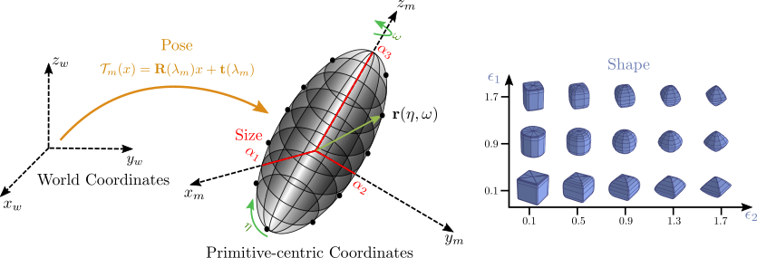
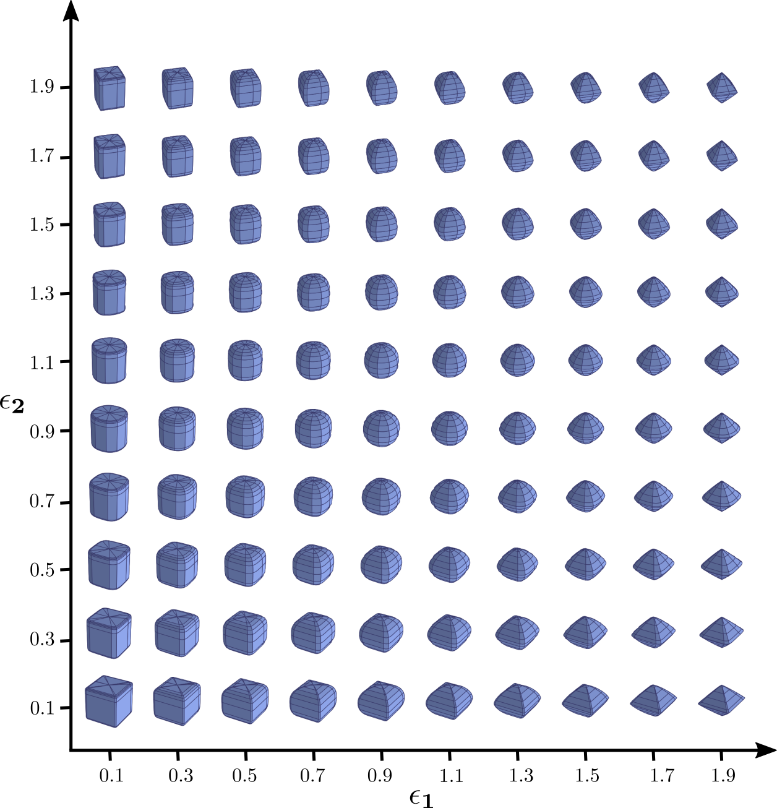

Inspired by the nature of the human’s cognitive system,
that perceives an object as a decomposition of parts,
researchers have proposed to represent objects as a set of
atomic elements, which we refer to as primitives. Examples
for such primitives include 3D polyhedral shapes,
generalized cylinders and geons for decomposing 3D objects
into a set of parts. In 1986, Pentland introduced a
parametric version of generalized cylinders, based on
deformable superquadrics. He proposed a system able to
represent the scene structure using multiple superquadrics.
Superquadrics are a parametric family of surfaces that can
describe cubes, cylinders, spheres, ellipsoids etc in a
single continuous parameter space. They are fully described
using 11 parameters: 6 for the pose, 3 for the size
and 2 for the shape. One of the most important features of
superquadric surfaces is their interchangeable
implicit and explicit function definition.
The explicit superquadric function defines the surface
vector \(\mathbf{r}\)that can be used for sampling points
on the superquadric surface
$$
\begin{equation}
\mathbf{r}(\eta, \omega) =
\begin{bmatrix}
\alpha_{1}\cos^{\epsilon_{1}}\eta \cos^{\epsilon_{2}}\omega \\
\alpha_{2}\cos^{\epsilon_{1}}\eta \sin^{\epsilon_{2}}\omega \\
\alpha_{3}\sin^{\epsilon_{1}}\eta
\end{bmatrix}
\quad
\begin{aligned}
-\pi/2 &\leq \eta \leq \pi/2\\
-\pi &\leq \omega \leq \pi
\end{aligned}
\label{eq:parametric_eq_supp}
\end{equation}
$$

where \(\mathbf{\alpha} = [\alpha_{1}, \alpha_{2},
\alpha_{3}]\) determine the size and \(\mathbf{\epsilon} =
[\epsilon_{1}, \epsilon_{2}]\) determine the global shape of
the superquadric. Below we visualize
the shape of superquadrics for different values of
\(\epsilon_{1}\) and \(\epsilon_{2}\). In addition to the
shape parameters, each superquadric is associated with a
rigid body transformation. This transformation is
represented by a translation vector \(\mathbf{t} = [t_{x},
t_{y}, t_{z}]\) and a quaternion \(\mathbf{q} = [q_{0},
q_{1}, q_{2}, q_{3}]\) that determines the coordinate
system transformation from world coordinates to local
primitive-centric coordinates.

Superquadrics Shape Vocabulary: Their ability to
model various shapes with few parameters makes them a
natural choice for geometric primitives.
The implicit function can be used to decide the relative
position of any 3D point w.r.t the superquadric surface.
In particular, for any point \(\mathbf{x} \in \mathbb{R}^3\), we
can determine whether it lies inside or outside a
superquadric using its implicit surface function which is
commonly referred to as the inside-outside
function.
$$
\begin{equation}
f(\mathbf{x}; \lambda) =
\left(\left(\frac{x}{\alpha_{1}}\right)^{\frac{2}{\epsilon_{2}}}
+ \left(\frac{y}{\alpha_{2}}\right)^{\frac{2}{\epsilon_{2}}}\right)^{\frac{\epsilon_{2}}{\epsilon_{1}}}
+ \left(\frac{z}{\alpha_{3}}\right)^{\frac{2}{\epsilon_{1}}}
\label{eq:implicit_sq}
\end{equation}
$$
If \(f(\mathbf{x}; \lambda) = 1.0\), \(\mathbf{x}\) lies on
the surface of the superquadric, if \(f(\mathbf{x}; \lambda) < 1.0\)
the corresponding point lies inside and if \(f(\mathbf{x}; \lambda)
> 1.0\) the point lies outside the superquadric.
We provide an easy-to-use script that can be used for
visualizing the superquadric surface given a set of
parameters. Code is available here.